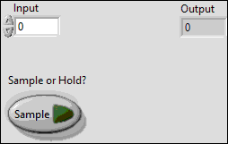

Help by FRC Team 836 - The RoboBees
This VI will either continually display new input values when set "Sample" or hold the current value when set to "Hold".

|
|
Input |
|
|
Sample or Hold? |
|
|
Output |

"Sample_and_Hold.vi History"
Current Revision: 8